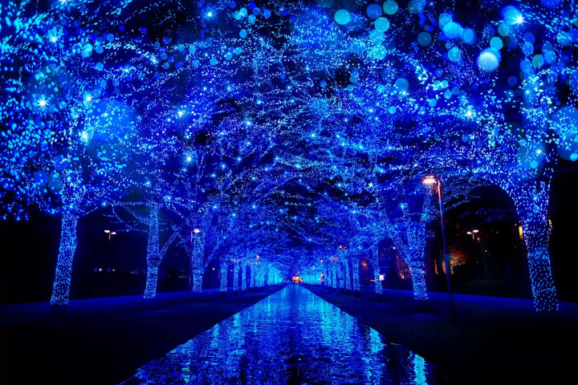
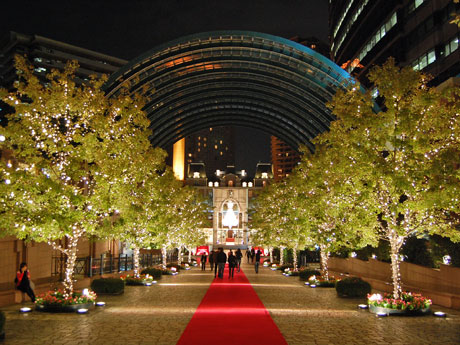
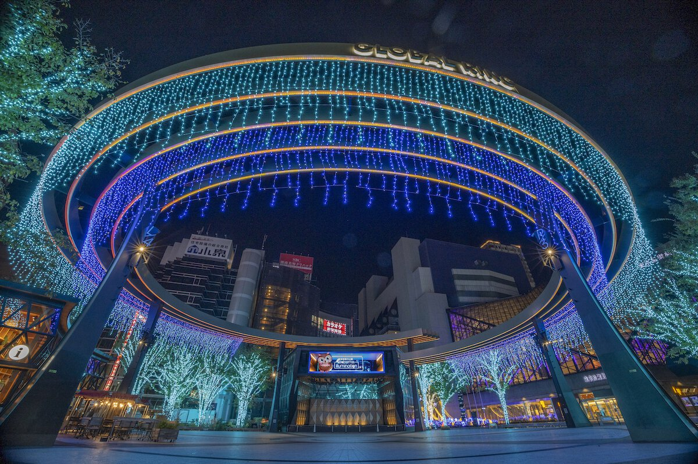

2024年/12月
Azabudai Hills Christmas Market 2024
港区（麻布台ヒルズ 中央広場）
2024年11月23日(土)～2024年12月25日(水)

青の洞窟 SHIBUYA
渋谷区（渋谷公園通りから代々木公園ケヤキ並木）
2024年12月6日(金)～2024年12月25日(水)

東京クリスマスマーケット
in 明治神宮外苑
新宿区（明治神宮外苑）
2024年11月19日(火)〜2024年12月25日(水)

Marunouchi Bright Holiday 2024
千代田区（丸ビル、新丸ビル、丸の内オアゾ、ほか）
2024年11月14日(木)～2025年1月13日(月)

megurogawa MINNA no ILLUMI 2024
品川区（目黒川周辺）
2024年11月6日(水)～2025年2月14日(金)

恵比寿ガーデンプレイス Baccarat ETERNAL LIGHTS ―歓びのかたち―
渋谷区（恵比寿ガーデンプレイス）
2024年11月9日(土)～2025年1月13日(月)

TOKYO ILLUMILIA 2024
中央区（さくら通り・八重洲仲通り周辺）
2024年11月6日(水)～2025年2月14日(金)

有明ガーデン シーズンイルミネーション
江東区（有明ガーデン）
2024年10月25日(金)～2025年2月28日(金)

池袋西口公園 extreme illumination 2024
豊島区（池袋西口公園）
2024年11月16日(土)～2025年2月28日(金)

2025年/1月
Marunouchi Bright Holiday 2024
千代田区（丸ビル、新丸ビル、丸の内オアゾ、ほか）
2024年11月14日(木)～2025年1月13日(月)
megurogawa MINNA no ILLUMI 2024
品川区（目黒川周辺）
2024年11月6日(水)～2025年2月14日(金)
恵比寿ガーデンプレイス Baccarat ETERNAL LIGHTS ―歓びのかたち―
渋谷区（恵比寿ガーデンプレイス）
2024年11月9日(土)～2025年1月13日(月)
TOKYO ILLUMILIA 2024
中央区（さくら通り・八重洲仲通り周辺）
2024年11月6日(水)～2025年2月14日(金)
有明ガーデン シーズンイルミネーション
江東区（有明ガーデン）
2024年10月25日(金)～2025年2月28日(金)
池袋西口公園 extreme illumination 2024
豊島区（池袋西口公園）
2024年11月16日(土)～2025年2月28日(金)